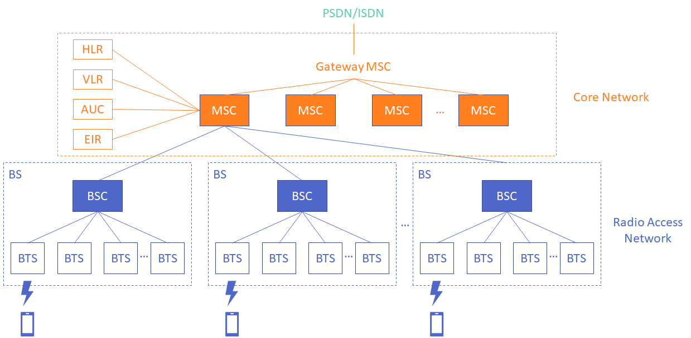
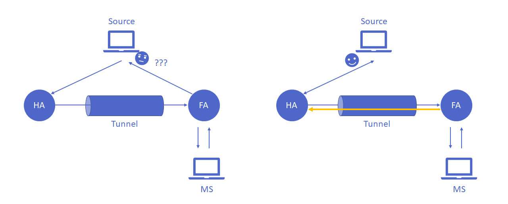
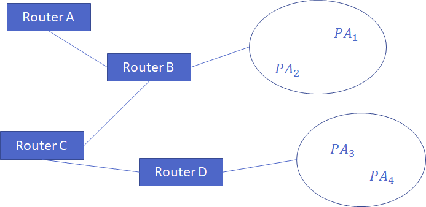
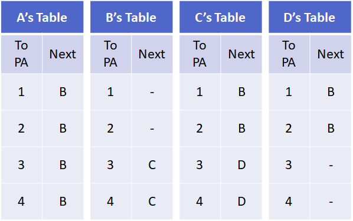

通訊原理與無線網路 - 09 Mobile Communication Systems
Chinese
通訊原理與無線網路
written by
LiaoWC
on 2021-05-31
Cellular System Infrastructure

主要的兩塊：
- Radio Access Network (RAN)
- Core Network (CN)
名詞解釋
- BS = BTS (base transceiver system) + BSC (BS controller)
- BTS: tower + antenna，塔台、天線
- BSC: electronics，進行運算、功率控制、選通道，一個BSC可以管上百台BTS以上。不同的 BSC 要進行溝通要經過 MSC，在 4G（不確定 3G 有沒有）有多「BSC 和 BSC 之間的連線」，連不同的基地台而不用經過機房。
- AUC (authentication center): 認證用戶、算錢
- EIR (equipment identity register): 有硬體設備的資訊。可以找到你的手機在哪個基地台附近。
- VLR (visitor location register): 記錄訪問這個 MSC 的 MS 的資訊。
- HLR (home location register): 儲存基本資料（像戶籍地址的感覺）；會記錄你的VLR在哪裡。
- PSDN: public switch data network（市話接 modem 上網）、ISDN ⇒ 可以傳 data & voice
- MSC (a mobile switching center)
Notes
- MS到BS是「無線」的，而基地台往機房這邊是「有線」拉光纖（到第五代有人開始提這邊也用無線）。
- HLR 和 VLR 會互指。
- 天線跟 BSC 佔基地台的主要花費。
Registration
MS 要註冊 Visiting-MSC，透過 beacon signal。Visiting-MSC 會回去問你的 Home-MSC，進行驗證，確認你的身份。會被登錄在 Visiting-MSC 的 VLR和在 Home-MSC HLR。
Handoff
MS在不同基地台之間轉換或者是在同個基地台不同天線裡轉換都稱為換手（handoff、handover）。換手的原因有很多種，像是因為你正在移動，所以需要換基地，也有可能是網路負載極度不平衡使得讓你換手去用不同基地台的資源。
換手分成兩個種類：hard 和 soft。
換手可能發生在不同基地台之間的轉換，也可能發生在同一個基地，像是更換使用不同的 sector。
Roaming
Roaming 和 handoff 相似的地方是它們常常都是因為使用者的移動而產生的，不同的地方在於 roaming 穿越核心網路，需要用到 router。Roaming 需要討論的是如何找到好的路徑。使用者跨越不同基地台的範圍時，若新的基地台所屬的 MSC 有所不同，可能需要 router 參與進來找尋溝通的路徑。
Paging area (PA) 在這種是個重要的概念，一個 paging area 可能包含多個 MSC，它幫助我們進行路線的查找。試想，如果你用中華電信的號碼，別的電信業者的門號打來你的手機號碼，它難道會進行全域的廣播，把整個中華電信廣播一次？這樣的效率太差。一個個 paging area 的找跟一次全域地找，這種分區的查找較有效率。
Mobile IP
首先必需先了解 HA 與 PA：
- HA (home agent): 你啟動服務時位置最近的 router，但如果離你最近的 router 負載太重，也可能換成別的 router。
- FA (foreign agent): 啟動服務之後，你移動到別的位置去了，隨著你移動而換成的 router 為 foreign agent。
Mobile IP 流程：
- MS 偵測到 FA 定期發的 beacon signal 或 MS 主動發 agent solicitation messages。
- FA 分配地址給 MS。若給的是 FA 自己的地址，稱為 CoA (care-of-address)，若是用 DHCP 的話，稱為 C-CoA (colocated CoA)
- MS 收到 CoA 後，會向它的 HA 註冊這個 CoA 和它的有效綁定的時間限制。這個註冊的過程可能是 MS 直接做，也可能是透過 FA。
- 別人要傳給 MS 的東西，一開始會先到 HA，HA 會進行封裝。如果用的是 CoA，會先傳給 FA，FA 解封裝後再傳你 MS；如果是用 C-CoA，HA 會直接傳給 MS。
Mobile IP 流程：
- MS 偵測到 FA 定期發的 beacon signal 或 MS 主動發 agent solicitation messages。
- FA 分配地址給 MS。若給的是 FA 自己的地址，稱為 CoA (care-of-address)，若是用 DHCP 的話，稱為 C-CoA (colocated CoA)
- MS 收到 CoA 後，會向它的 HA 註冊這個 CoA 和它的有效綁定的時間限制。這個註冊的過程可能是 MS 直接做，也可能是透過 FA。
- 別人要傳給 MS 的東西，一開始會先到 HA，HA 會進行封裝。如果用的是 CoA，會先傳給 FA，FA 解封裝後再傳你 MS；如果是用 C-CoA，HA 會直接傳給 MS。
Triangular Routing Problem

以上圖左邊為例，對要傳給你的 source 來說，你直接從 FA 傳回給它它會不知道你是誰（它認為它是跟 HA 通訊，所以不知道你 FA 是誰）。解決方法為 reverse tunneling，FA 還是要走反方向回去 HA。所以在這個問題裡，不可避免的要繞遠路。
Rerouting in Backbone Routers
MS 到了新的地方要接用新的 FA，MS 的 HA 不變，那麼新的 FA 是要如何知道 HA 在哪？怎麼去？
每個 router 會維護一張表。上面不是記去每個 paging area 要怎麼走的詳細資料，而是類似 gateway 的概念，記的是去哪個 paging area 從當前的 router 走的話下一站要走到哪裡。在這裡記的是 paging area 是因為如果是記 router 的話，數量太多了，不可能都放。


Multicasting
群播：一個傳送者多個接受者。
大家從同樣的 HA 移動到同樣的 FA
做法：bidirectional tunneling、remote subscription。
Bidirectional Tunneling
每個 MS 建一個 HA 到 FA 的 tunnel。
- 缺點：傳送的資料重複了，浪費頻寬。
- 優點：由於有 HA，資料傳輸不會中斷。
Remote Subscription
FA 不透過 HA 拿資料。FA 它自己長到 delivery tree。
- 缺點：有資料中斷的可能。（在 FA 長到樹上之前，MS 收不到資料）
- 優點：(1)避免傳一樣的資料。(2)不透過 HA 就能找一條更近的路直接從 source 到 FA。
在不同 HA 的大家移動到相同 FA 的狀況
DMSP (Designated Multicast Service Provider)
從多個選一個 HA 建 tunnel 到 FA。被選到那個的 MS 若自己本身就跑掉去別的 FA 的話，再從剩下的選一個。
- 缺點：可能會資料中斷。（一次找多個一點可以降低資料中斷的可能）
- 優點：避免傳重覆的東西。